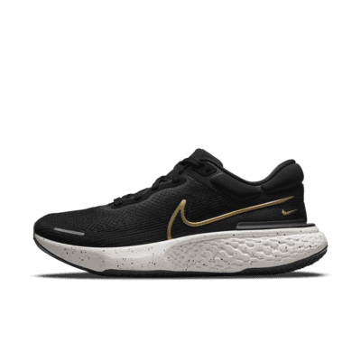

Nike ZoomX Invincible Run Flyknit Features

Extremely soft and energy-saving ZoomX midsole
Comfortable knit upper
Smooth ride
The ZoomX Invincible Run takes the magic ZoomX foam from Nike legends like the Vaporfly and Alphafly, and creates an entire midsole unlike any other. The soft, yet responsive, underfoot experience makes this shoe an ideal choice for longer distance training. The rocker geometry and wider base provides an efficient feel (without a carbon fiber plate), as well as a stable ride. This shoe is finished off with a thin rubber outsole to add durability and a Flyknit upper design with a padded collar making it a comfortable daily trainer made to help all runners.